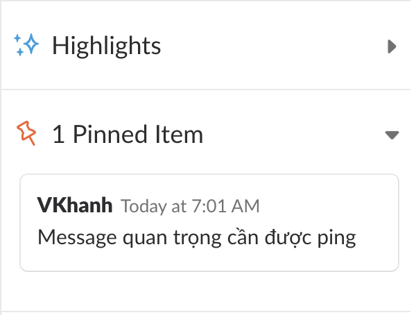

Slack guideline
Slack là gì ? Tại sao cần nên dùng slack
* Slack là một tools dùng trong công việc - Mục đích của dùng Slack là
* Channels : channels -> tập trung hơn là Facebook, và một member trong team có thể tìm thấy các channel public và họ tự join vào đó (nếu họ thấy cần thiết và mình support được dự án, vấn đề mà team khác gặp phải
* Pinned Messages:: các tin nhắn quan trọng sẽ được pinned (gắn lên trong channels) để các thành viên có thể dễ dàng tìm kiếm
* Liên kết với third parties tools : có thể liên kết với các phần mềm của bên thứ 3 (Trello chẳng hạn)
Các tính năng cơ bản của slack
1. Tạo channels
- Click vào dấu (+) để tạo channel mới. Một cửa sổ tạo channel mới sẽ xuất hiện
- Chúng ta có thể tạo channel Public hoặc Non-public bằng cách bật tắt toogle như bên dưới. Các khung Purpose hoặc Send Invites to ta có thể để trống cũng được (Sau này sẽ edit được)
- Channel mới đã được tạo và ta sẽ đc redirect sang channel đó
Pin Message:
Những message quan trọng ( ví dụ đường link đến folder dự án, những thông tin bạn muốn chia sẻ với mọi người ) nên được pin để những người mới tham gia vào channels có thể tham khảo thông tin mà không cần hỏi.
- Đầu tiên chúng ta sẽ nhập message quan trọng cần ping lên slack như bên dưới, và click vào button […] ở bên góc phải trên của message, chọn Pin to channel
- Một popup menu sẽ hiển thị xác nhận với chúng ta việc Pin message, tất nhiên là chúng ta chọn [Yes, pin this message] rồi.
- Sau khi pin, chúng ta có thể xác nhận lại các message đã được pin thông qua việc click lên icon có biểu tượng pin như bên dưới
- Click lên biểu tượng pin sẽ thấy xuất hiện pin message phía góc phải màn hình

Tuỳ biến notifications
Khi làm việc với slack có một điều nếu bạn không config notifications thì cũng khá là phiền toái (nếu phải tham gia quá nhiều workspace và channels).
Bạn có thể thiết lập lại khi nào notifications sẽ được gửi đến mình thông qua thiết lập như bên dưới
Liên kết với third parties tools
Thường thì khi làm một dự án , sẽ có 2 channels, một channels main để mọi người nói chuyện với nhau và một channels được gọi là notifications để nhận các notifications từ tools quản lý dự án (Trello, Backlog, Jira … ) gửi sang. Notifications đó bao gồm : có task mới được đăng kí, …
Ví dụ